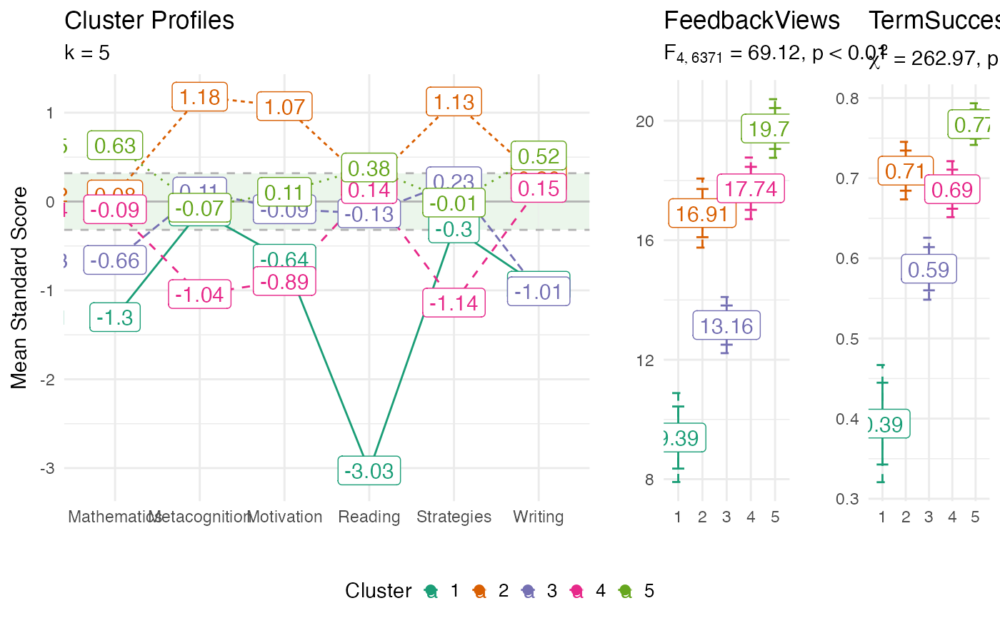
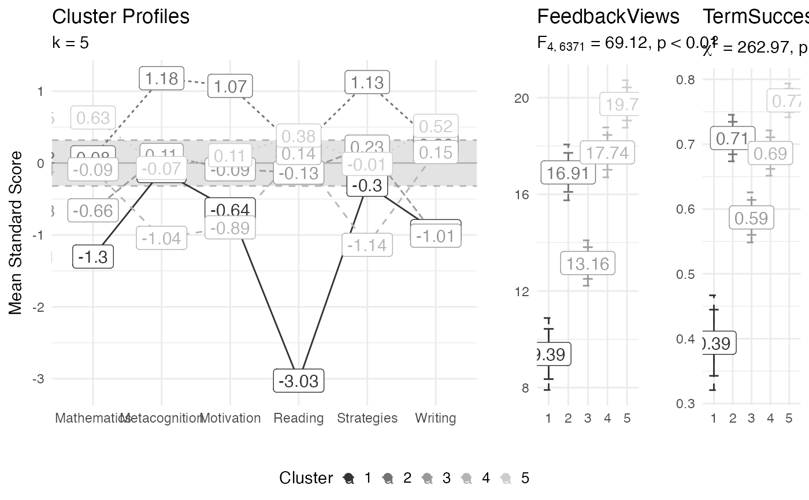

Profile plot for cluster analysis.
Usage
profile_plot(
df,
clusters,
df_dep,
standardize = TRUE,
bonferroni = TRUE,
label_means = TRUE,
label_profile_means = label_means,
label_outcome_means = label_means,
center_band = 0.25,
center_fill = "#f0f9e8",
center_alpha = 0.1,
text_size = 4,
hjust = 0.5,
point_size = 2,
se_factor = 1.96,
color_palette = 2,
cluster_labels,
cluster_order,
label_clusters = TRUE,
cluster_label_x,
cluster_label_hjust = 5,
ylab = ifelse(standardize, "Mean Standard Score", "Mean Score"),
title = "Cluster Profiles"
)Arguments
- df
data.frame with the columns used for the cluster analysis.
- clusters
vector indicating what cluster each row of
dfbelongs to.- df_dep
a data.frame with any dependent variables to include in the plot (optional).
- standardize
if TRUE values in
dfwill be converted to z-scores.- bonferroni
if TRUE Bonferroni adjusted error bars will be plotted.
- label_means
label the mean values of both clusters and outcome variables.
- label_profile_means
label the mean values of the clusters.
- label_outcome_means
label the mean values of outcome variables.
- center_band
the percentage around the mean to shade. This only works if
standardize = TRUE.- center_fill
the color of the center band.
- center_alpha
the transparency level of the center band.
- text_size
text size.
- hjust
horizontal adjustment of labels.
- point_size
size of points passed to
ggplot2::geom_point().- se_factor
critical value used ot determine the width of standard error bars.
- color_palette
the color palette to use. See
ggplot2:scale_color_brewer()for more details. Ifcolor_palette = 0thenggplot2::scale_color_grey()will be used.- cluster_labels
labels for the clusters.
- cluster_order
order of clusters on the x-axis.
- label_clusters
whether to label clusters on the main panel.
- cluster_label_x
cluster labels.
- cluster_label_hjust
horizontal adjustment for y-axis labels.
- ylab
label for the y-axis.
- title
plot title.
Examples
data(daacs, package = 'clav')
cluster_vars <- c('Motivation', 'Metacognition', 'Strategies', 'Mathematics', 'Reading', 'Writing')
daacs <- daacs |> dplyr::mutate(across(dplyr::all_of(cluster_vars), clav::scale_this))
kmeans_out <- stats::kmeans(daacs[,cluster_vars], 5)
profile_plot(
df = daacs[,cluster_vars],
clusters = kmeans_out$cluster,
df_dep = daacs[,c('FeedbackViews', 'TermSuccess')]
)

# Grey scale plot
profile_plot(
df = daacs[,cluster_vars],
clusters = kmeans_out$cluster,
df_dep = daacs[,c('FeedbackViews', 'TermSuccess')],
center_fill = 'grey90',
color_palette = 0
)
